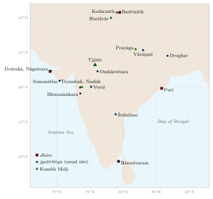
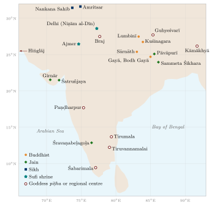

Chapter 4: Sacred Geography and Pilgrimage¶
ayodhyā mathurā māyā kāśī kāñcī avantikā
purī dvārāvatī caiva saptaitā mokṣadāyikāḥ
“Ayodhyā, Mathurā, Māyā [Haridvār], Kāśī, Kāñcī, Avantikā [Ujjain] and the city of Dvārakā: these seven grant liberation.”
— A widely quoted traditional verse
Of all the forms of geographical knowledge in pre-modern India, the one that reached the largest number of people was sacred geography. A dense network of sacred places—river fords, confluences, mountains, caves, groves, temple towns and the tombs of saints—covers the subcontinent. People travelled to them, sometimes over very long distances, and the texts that praised them named routes, rivers and neighbouring places. Pilgrimage thus helped to create a shared knowledge and imagination of the land far beyond the borders of any single kingdom (Eck 2012; Bhardwaj 1973).
The network was not the creation of one tradition. Brahmanical Hindus, Buddhists, Jains, Sikhs and Muslims each developed their own sacred places and journeys, often in the same landscape and sometimes at the same sites. Nor was access equal: who could enter a temple, bathe at a ghāṭ or undertake a long pilgrimage depended on caste, gender and wealth. This chapter describes the main networks and the literature that recorded them.
4.1 The Idea of the Tīrtha¶
The Sanskrit word tīrtha comes from the root tṝ, “to cross over”. Its first meaning is a ford or a bathing place on a river. Already in the Mahābhārata it means a sacred place, often but not always beside water, where the boundary between the human and the divine is thought to be easily crossed, and where bathing, offerings to the ancestors and gifts bring great merit. By extension a holy person, a teacher or a parent can be called a tīrtha, and a Jain tīrthaṅkara is a “ford-maker” who has shown the way across the ocean of rebirth.
Some Terms of Sacred Geography
Tīrtha: ford; sacred place, especially one associated with water.
Kṣetra: “field”; a sacred territory, often with defined boundaries, such as Kāśī-kṣetra or Kurukṣetra.
Dhām: “abode”; a seat of a deity, used especially for the four great dhāms.
Pīṭha: “seat”; above all the seats of the Goddess (śākta pīṭha).
Māhātmya: a text in praise of a sacred place, describing its origin, sub-sites and merits.
Yātrā: journey, pilgrimage; parikramā or pradakṣiṇā: circumambulation, keeping the sacred object to one’s right.
4.1.1 The Literature of Pilgrimage¶
The oldest extended account of pilgrimage in Sanskrit is the Tīrthayātrāparvan of the Mahābhārata’s third book, in which the sage Pulastya and later the Pāṇḍavas’ own journeys take the reader round the sacred places of the land. The Purāṇas contain a vast māhātmya literature; some, like the Kāśīkhaṇḍa of the Skanda Purāṇa, are book-length descriptions of a single sacred city. From the twelfth century, scholars compiled digests on the rules of pilgrimage: Lakṣmīdhara’s Tīrthavivecanakāṇḍa, part of his Kṛtyakalpataru, and later works by Vācaspati Miśra, Nārāyaṇa Bhaṭṭa and Mitra Miśra. P. V. Kane’s History of Dharmaśāstra surveys this literature and lists many hundreds of tīrthas (Kane 1953).
These texts are religious, not travel guides, and their geography is often schematic. But they preserve local topography in detail, and the larger digests arrange tīrthas by region and river. Surinder Bhardwaj’s geographical study showed that Hindu pilgrimage places form a hierarchy, from places of all-India importance to regional and local ones, and that the distance pilgrims travel and the social groups they come from vary with the level of the place (Bhardwaj 1973).
4.2 Kāśī: The Paradigmatic Sacred City¶
Vārāṇasī, also called Kāśī (“the luminous”) and Banaras, is the most celebrated of Hindu sacred cities. It is held to be a mukti-kṣetra, a place where death brings liberation: according to the Kāśīkhaṇḍa and later tradition, Śiva whispers the “crossing” mantra (tāraka mantra) into the ear of the dying. The sacred territory is bounded by the Pañcakrośī road, a circuit of roughly 80 km which pilgrims walk in about five days, worshipping at a series of shrines (traditionally 108) on the way. Diana Eck’s study of the city traces how its sacred topography was described in the māhātmyas and how it can still be followed on the ground (Eck 1982); the geographer Rana P. B. Singh has mapped its pilgrimage circuits in detail (Singh 2009).
The city’s history is also one of destruction and rebuilding. The temple of Viśveśvara (Viśvanātha) was destroyed several times, most notably on Aurangzeb’s orders in 1669, when a mosque was built on part of the site; the present temple was built by Ahilyābāī Holkar of Indore in 1780. Kāśī was also an important centre of Muslim learning and crafts, and of Kabīr and Ravidās, whose critiques of caste and ritual were themselves part of the city’s religious life.
4.3 The Four Dhāms¶
The four dhāms are placed near the four extremities of the subcontinent (Figure 4.1):
-
Badrīnāth (north): a Vaiṣṇava shrine at about 3,100 m on the Alakanandā in the Garhwal Himalaya, open for about six months each summer.
-
Dvārakā (west): Kṛṣṇa’s city on the coast of Saurashtra, Gujarat.
-
Purī (east): the temple of Jagannātha on the coast of Odisha, famous for its annual chariot festival (rathayātrā).
-
Rāmeśvaram (south): the temple of Rāmanāthasvāmī (Śiva) on Pamban island, linked with Rāma’s crossing to Laṅkā.
Tradition associates the four dhāms with the philosopher Śaṅkara, who is said to have founded four monasteries (maṭha) in the four directions: Jyotirmaṭh near Badrīnāth, the Śāradā Maṭha at Dvārakā, the Govardhana Maṭha at Purī and the Śṛṅgeri Maṭha in Karnataka. Śaṅkara lived c. 700–750 CE; the conventional dates 788–820 are traditional. Historians regard the attribution of the four maṭhas to Śaṅkara himself as tradition rather than established fact; the institutional prominence of Śṛṅgeri, for example, dates from the Vijayanagara period in the fourteenth century, and the grouping of the four dhāms as an all-India circuit is probably later still. In the Himalaya a separate “little four dhāms” (choṭā cār dhām)—Yamunotrī, Gaṅgotrī, Kedārnāth and Badrīnāth—has become one of the most popular pilgrimages of modern India (Eck 2012).
Geographic Insight: The Four Directions
A pilgrim who visits the four dhāms crosses the subcontinent from the Himalaya to the southern sea and from the western to the eastern coast. The pattern of four cardinal shrines expresses, in religious form, an idea of the land as a single sacred whole bounded by mountains and sea, the same idea found in the Viṣṇu Purāṇa’s definition of Bhāratavarṣa (Chapter 2).
4.3.1 Purī and the Chariot Festival¶
The temple of Jagannātha at Purī, begun in its present form under the Eastern Gaṅga king Anantavarman Coḍagaṅga in the twelfth century, is the focus of one of the most popular pilgrimages of eastern India. At the annual chariot festival (rathayātrā) in Āṣāḍha, the images of Jagannātha, his brother Balabhadra and his sister Subhadrā are drawn on huge wooden chariots along the main street of the town by crowds of devotees. The cult of Jagannātha has been described as inclusive—the deity is associated with tribal origins in Odisha, and food offered to him (mahāprasāda) is traditionally shared across castes—but the temple also maintains strict rules of entry, and non-Hindus are not admitted. Its history illustrates both the integrative and the exclusionary sides of sacred geography.
4.4 The Twelve Jyotirliṅgas¶
The twelve jyotirliṅgas (“liṅgas of light”) are Śaiva shrines where Śiva is believed to have manifested as a column of light. A popular hymn of remembrance, versions of which are attached to the Śiva Purāṇa, lists them as follows; their usual locations are given in Table 4.1 and Figure 4.1.
The Dvādaśajyotirliṅgasmaraṇa (popular hymn)
saurāṣṭre somanāthaṃ ca śrīśaile mallikārjunam
ujjayinyāṃ mahākālam oṃkāram amaleśvaram
paralyāṃ vaidyanāthaṃ ca ḍākinyāṃ bhīmaśaṅkaram
setubandhe tu rāmeśaṃ nāgeśaṃ dārukāvane
vārāṇasyāṃ tu viśveśaṃ tryambakaṃ gautamītaṭe
himālaye tu kedāraṃ ghuśmeśaṃ ca śivālaye
“Somanātha in Saurāṣṭra, Mallikārjuna on Śrīśaila; Mahākāla in Ujjayinī, Oṃkāra [and] Amaleśvara; Vaidyanātha at Paralī, Bhīmaśaṅkara in Ḍākinī; Rāmeśa at the Bridge, Nāgeśa in the Dāruka forest; Viśveśa in Vārāṇasī, Tryambaka on the bank of the Gautamī [Godāvarī]; Kedāra in the Himālaya, and Ghuśmeśa at Śivālaya.”
| Jyotirliṅga | Usual location (and disputed claims) |
|---|---|
| Somanātha | Prabhāsa Pāṭan, Saurashtra (Gujarat) |
| Mallikārjuna | Śrīśailam, Andhra Pradesh |
| Mahākāla | Ujjain, Madhya Pradesh |
| Oṃkāreśvara | island of Māndhātā in the Narmadā, Madhya Pradesh |
| Vaidyanātha | Deoghar (Jharkhand); also claimed by Parli (Maharashtra), the “Paralī” of the hymn |
| Bhīmaśaṅkara | near Pune (Maharashtra); other sites, among them one near Guwahati (Assam), claim the name |
| Rāmeśvara | Rāmeśvaram, Tamil Nadu |
| Nāgeśvara | near Dvārakā (Gujarat); also claimed by Aundha (Maharashtra) and Jageshwar (Uttarakhand) |
| Viśvanātha | Vārāṇasī, Uttar Pradesh |
| Tryambakeśvara | near Nashik, at the source of the Godāvarī, Maharashtra |
| Kedāranātha | Garhwal Himalaya, Uttarakhand, at about 3,580 m |
| Ghṛṣṇeśvara | Verul, near Ellora, Maharashtra |

The disputes over location are themselves instructive. A sacred name in a text could be claimed by more than one place, and regional traditions competed for the prestige of a pan-Indian list. The twelve sites are spread from Saurashtra to the Himalaya and the southern sea, and popular writing sometimes presents the list as a deliberate plan to sanctify every kind of landscape; but the list was assembled over time, by the competition of places, and no text describes it as a design.
Several of these temples have long and troubled histories. The temple at Somanātha was raided by Maḥmūd of Ghazni in 1025–26, rebuilt and damaged more than once, and reconstructed after Independence, the new temple being inaugurated in 1951. Romila Thapar has shown how differently the event of 1026 was remembered in Sanskrit inscriptions, Persian chronicles, Jain texts and modern nationalist writing (Thapar 2004).
4.5 The Seats of the Goddess¶
The śākta pīṭhas are places associated with the body of the goddess Satī. In the best-known version of the myth, Satī dies at the sacrifice of her father Dakṣa; Śiva wanders the world carrying her body, and Viṣṇu cuts it into pieces with his discus, which fall to earth and sanctify the places where they land. Earlier Tantric texts, Hindu and Buddhist, know of four principal pīṭhas (Kāmarūpa, Jālandhara, Pūrṇagiri and Oḍḍiyāna); later lists give 51, 52 or 108. The list of 51 most often quoted, the Pīṭhanirṇaya attached to the Tantracūḍāmaṇi, is a late text. D. C. Sircar’s study of the lists remains the standard work (Sircar 1973).
The pīṭhas extend beyond the modern Indian state: Hiṅglāj in Balochistan (Pakistan), where local Muslims also venerate the goddess as Nānī, Guhyeśvarī in Kathmandu, and sites in Bangladesh and Tibet. Kāmākhyā in Assam, the pīṭha of the goddess’s yoni, is the most important in practice. The list is another example of a pan-Indian network built by linking many local goddess shrines to a single myth.
4.6 Rivers, Confluences and the Kumbh Melā¶
Rivers are goddesses, and their banks, sources and confluences are among the oldest tīrthas. A widely recited bathing verse invokes seven rivers to be present in the water (see Chapter 9). Prayāga, where the Gaṅgā and Yamunā meet and where tradition adds the invisible Sarasvatī, is the “king of tīrthas” (tīrtharāja).
The Kumbh Melā is held in rotation at four places—Haridvār, Prayāga (Prayagraj), Ujjain and Nashik–Tryambakeshwar—at intervals determined by the position of Jupiter and the sun. Its origin myth is the spilling of drops of nectar from the pot (kumbha) churned from the Ocean of Milk. The gatherings have grown enormously in modern times; the official estimates of attendance at the largest bathing days, which run into tens of millions, are announced by the organising authorities and cannot be checked independently. The history of the festival is less ancient than often claimed. Xuanzang described a great assembly at which Harṣa gave away his wealth at Prayāga in the seventh century, and bathing fairs at Prayāga and Haridvār are much older than the modern melā; but Kama Maclean has shown that the application of the name “Kumbh” to the Prayāga fair, and much of its present organisation, took shape in the nineteenth century, partly through the interaction of pilgrimage priests, ascetic orders and the colonial administration (Maclean 2008).
4.7 Circumambulation¶
Parikramā or pradakṣiṇā, walking round a sacred object with it on one’s right, is practised at every scale:
-
round a shrine or temple, along the ambulatory path;
-
round a sacred territory, such as the Pañcakrośī of Kāśī (about 80 km) or the caurāsī kos (“84 kos”) circuit of Braj, the land of Kṛṣṇa round Mathurā and Vṛndāvana;
-
round a sacred hill, such as Aruṇācala at Tiruvannamalai (about 14 km) or Govardhana in Braj;
-
round a mountain, above all Kailāsa in western Tibet (about 52 km at altitudes over 4,600 m);
-
round a river, as in the Narmadā parikramā, in which pilgrims walk from the source at Amarkantak to the sea along one bank and back along the other, some 2,600 km, a journey of months.
Long circumambulations produce an intimate knowledge of a landscape: its paths, crossings, villages, seasons and shrines. Pilgrims’ guides (paṇḍās), who kept registers of the families they served, were repositories of such knowledge.
4.8 Kailāsa and Mānasarovar¶
Mount Kailāsa (Tibetan Gangs Rin po che, 6,638 m) in western Tibet, with the lakes Mānasarovar and Rakas Tal at its foot, is sacred to four religions. For Hindus it is the abode of Śiva and Pārvatī; for Tibetan and other Buddhists it is the palace of the tantric deity Cakrasaṃvara; for Jains it is usually identified with Aṣṭāpada, where the first tīrthaṅkara, Ṛṣabha, attained liberation; and for followers of Bon it is the nine-storeyed sacred mountain of their founder’s tradition. The region is close to the sources of the Indus, the Sutlej, the Yarlung Tsangpo (Brahmaputra) and the Karnali, a tributary of the Ganges.
Kailāsa and Mānasa appear in Sanskrit literature from the epics onward, but the journey itself was long and hard. Indian pilgrims usually went from Kumaon over the Lipu Lekh pass or from Garhwal and Kinnaur over other high passes, and the Tibetan circumambulation was largely in the hands of Tibetan and Bhotiya traders and guides. Alex McKay has argued that the mountain’s present standing as the supreme Hindu pilgrimage goal owes a good deal to nineteenth- and twentieth-century developments: colonial travellers and officials, Hindu reformers and modern pilgrimage organisation (McKay 2015). Since 1981 the Government of India has organised an annual Kailash Mansarovar Yatra by agreement with China.
4.8.1 Amarnāth¶
The cave of Amarnāth, at about 3,900 m in the mountains east of Srinagar, contains an ice formation worshipped as a liṅga of Śiva. Pilgrims visit it during the summer months, culminating at the full moon of Śrāvaṇa (July–August), approaching from Pahalgam or Baltal. Local tradition credits a Muslim shepherd family with the cave’s discovery, and Kashmiri Muslims have long provided porters, ponies and services to the pilgrims—one of many examples of shared involvement in sacred places. The pilgrimage has grown enormously since the 1990s and is now organised by a state board, with heavy security arrangements.
4.9 Buddhist, Jain and Sikh Pilgrimage¶
4.9.1 Buddhist Pilgrimage¶
The Mahāparinibbāna Sutta (Dīgha Nikāya 16) has the Buddha name four places that a faithful person should see: where he was born (Lumbinī), where he attained awakening (Bodh Gayā), where he first taught (Sārnāth, near Vārāṇasī) and where he passed away (Kuśinagara). Aśoka visited Lumbinī in the twentieth year of his reign and set up a pillar recording the visit; four further places associated with miracles were later added to make eight great sites. Pilgrims came from Sri Lanka, Central Asia, China, Korea, Southeast Asia and Tibet; the accounts of Faxian, Xuanzang and Yijing (Chapter 6) are pilgrims’ records. Burmese kings sent missions to repair the Mahābodhi temple at Bodh Gayā between the late eleventh and the thirteenth centuries, and the Tibetan monk Dharmasvāmin visited Bodh Gayā and Nālandā in 1234–36, after the destruction of the great monasteries (Roerich 1959). After a long decline, the sites were revived from the late nineteenth century, through archaeological excavation and the work of Buddhists such as Anagārika Dharmapāla, founder of the Mahā Bodhi Society (1891) (Huber 2008).
4.9.2 Jain Pilgrimage¶
Jain sacred geography is focused on the places where the tīrthaṅkaras were born, renounced the world, attained omniscience and liberation, and on great temple complexes built by lay donors. Śatruñjaya near Palitana and Girnār in Gujarat are covered with temples; Sammeta Śikhara (Parasnath hill, Jharkhand) is where twenty of the twenty-four tīrthaṅkaras are said to have attained liberation; Pāvāpurī in Bihar is the place of Mahāvīra’s liberation; Śravaṇabeḷagoḷa in Karnataka, with its colossal image of Bāhubali, is the focus of Digambara pilgrimage. Wealthy lay patrons (saṅghapati) led large pilgrim caravans (saṅgha-yātrā), and Jain writers produced pilgrimage literature: lists and hymns of sacred places (tīrthamālā) and Jinaprabhasūri’s Vividhatīrthakalpa (completed 1333), which gives historical and legendary accounts of many sites (Dundas 2002).
Figure 4.2 shows the principal Buddhist and Jain sites named here, with some of the Sikh, Muslim and regional centres described below.

4.9.3 Sikh Pilgrimage¶
The janamsākhī narratives of the life of Guru Nānak (1469–1539) describe long journeys (udāsīs) to the east, south, north and west, including Mecca and Baghdad. Historians treat these narratives as hagiography whose details cannot be confirmed, but they show how the early Sikh community imagined its founder moving through the sacred geography of both Hindus and Muslims (McLeod 1968). The principal Sikh pilgrimage places are the Harimandar Sāhib (Golden Temple) at Amritsar and the five takhts, together with gurdwaras at places associated with the Gurus. Partition in 1947 left Nānak’s birthplace, Nankana Sahib, and Kartarpur, where he spent his last years, in Pakistan; since 2019 a corridor has allowed Indian pilgrims to visit Kartarpur without a visa.
4.10 Muslim Sacred Geography and the Hajj from India¶
4.10.1 Shrines of the Saints¶
From the thirteenth century the tombs (dargāh) of Sufi saints became major centres of pilgrimage (ziyārat) in South Asia. The shrine of Muʿīn al-Dīn Chishtī (d. 1236) at Ajmer, visited by Akbar on foot, and that of Niẓām al-Dīn Awliyāʾ (d. 1325) in Delhi drew pilgrims from across the subcontinent, especially for the anniversary of the saint’s death (ʿurs) (Currie 1989). Such shrines were, and are, visited by Hindus and Sikhs as well as Muslims. Many places in India have overlapping sacred histories of this kind.
4.10.2 The Hajj¶
The pilgrimage to Mecca linked India to the Red Sea and Arabia. Before the age of steam, most pilgrims from India went by sea from the ports of Gujarat and the western coast—above all Surat, known in Mughal times as the “Gate of Mecca” (Bāb al-Makka)—to Jeddah or Mocha, using the monsoon winds; others travelled overland through Afghanistan and Iran. The Mughal emperors financed ships and pilgrims: Akbar appointed an official to lead the pilgrimage caravan in the 1570s, and his aunt Gulbadan Begum, author of a memoir of the early Mughal court, went on the Hajj with a party of royal women in 1576 and returned only in 1582. From the sixteenth century the Portuguese, who controlled much of the western Indian Ocean, required Indian ships to carry their passes (cartaz), and the safety of pilgrim ships became a political issue. In the nineteenth century steamships from Bombay transformed the journey, and the colonial government began to regulate it (Pearson 1994).
The Hajj was itself a source of geographical knowledge and of travel writing. Indian pilgrims returned with knowledge of Arabia, the Red Sea ports and the Ottoman world, and from the eighteenth century some wrote accounts of their journeys in Persian and later in Urdu (Chapter 13).
4.10.3 Shia Pilgrimage and Links with Iraq¶
Shia Muslims in India also travelled to the shrines of the imams in Iraq and Iran, above all to Karbala and Najaf. The Shia rulers of Awadh in the eighteenth and nineteenth centuries sent money to the shrine cities of Iraq, built canals there, and supported scholars and pilgrims; in India they built imāmbāṛās, halls for the commemoration of the martyrdom of Ḥusain, and replicas of the shrines of Karbala, so that the sacred geography of Iraq was in a sense reproduced in Lucknow and other Indian cities. Processions during Muḥarram carry taʿziyas, models of the tomb of Ḥusain, through the streets, and in many places Hindus as well as Muslims take part.
4.11 Regional Pilgrimage Traditions¶
Alongside the pan-Indian networks, every region developed its own sacred geography, often created by the poets and saints of the regional languages.
4.11.1 The Tamil Shrines of the Hymnists¶
In the Tamil country, the Śaiva poet-saints (Nāyaṉmār) and Vaiṣṇava poet-saints (Āḻvār) of the sixth to ninth centuries travelled from temple to temple and sang hymns to the deity of each place. Their hymns were later collected in the Tēvāram and the Nālāyira Divya Prabandham. The places they sang about became canonical lists: some 275 Śaiva “places that received songs” (pāṭal peṟṟa talam) and 108 Vaiṣṇava “divine places” (divya dēśam), most of them in Tamil Nadu and Kerala (two of the 108 are heavenly). The hymns are full of the names and landscapes of particular places—the river, the paddy fields, the groves, the town—and so created a dense sacred map of the Tamil land (Peterson 1989).
4.11.2 The Vārī to Paṇḍharpur¶
In Maharashtra the devotees of Viṭṭhala of Paṇḍharpur, the Vārkarīs, walk to Paṇḍharpur every year in the month of Āṣāḍha (June–July), accompanying palanquins (pālkhī) bearing the sandals of the saint-poets Jñāneśvar from Āḷandī and Tukārām from Dehu. The pilgrimage, which takes about three weeks, brings together people of many castes. The Vārkarī tradition honoured saints of low status—the tailor Nāmdev, the potter Gorā, the gardener Sāvatā, the woman servant Janābāī and the “untouchable” Cokhāmeḷā— but Cokhāmeḷā himself was not allowed into the temple, and is remembered by a shrine at its steps. D. B. Mokashi’s account of walking the pālkhī route conveys the experience of the pilgrimage (Mokashi 1987).
4.11.3 Pilgrimage Priests and Their Registers¶
At major pilgrimage centres, hereditary priests (paṇḍās) served pilgrims from particular regions and castes. At Haridvār, Gayā, Prayāga, Kurukṣetra and elsewhere they kept registers (vahīs) in which visiting families recorded their names, ancestors and home villages, sometimes over many generations. These registers, still consulted by families tracing their ancestry, are an unusual record of pilgrims’ movements and of the geography of kinship. The priests also guided pilgrims round the sacred sites and, before modern transport, along the routes between them.
4.12 Local Sacred Geography¶
Below the level of the great pilgrimage centres lies the sacred geography that most people lived in every day: the village goddess (grāmadevatā) at the edge of the settlement, the shrine of the boundary or of the guardian deity, the sacred tree, the tank, the snake shrine, the memorial stones of heroes and of women who died as satī, and the tombs of local saints. Many of these sites are not mentioned in any Sanskrit text, and their priests are often not Brahmins. Their festivals mark the boundaries of the village and the turning of the agricultural year.
Local and pan-Indian sacred geography were connected in both directions. Local goddesses were identified with the great Goddess and given a place in the list of śākta pīṭhas; local heroes and deities were identified with forms of Viṣṇu or Śiva; and the māhātmyas often tell how a local sacred place became known to the gods and sages of the Purāṇas. At the same time, the great centres drew on their surrounding countryside for priests, pilgrims and patrons. The sacred geography of India is best seen not as a single system imposed from above but as many layers built up over time (Eck 2012; Bhardwaj 1973).
4.13 Caste, Gender and Access¶
Sacred geography was not equally open to all. Many temples excluded people of the castes regarded as “untouchable”, and in parts of the south they were barred even from the roads around temples. The struggle against these exclusions was a major part of modern Indian social reform: the Vaikom satyāgraha in Travancore (1924–25), the Guruvayur satyāgraha (1931–32), the Travancore Temple Entry Proclamation of 1936 and B. R. Ambedkar’s Kalaram temple satyāgraha at Nashik (1930–35). Article 17 of the Constitution abolished untouchability, and later legislation opened Hindu temples to all Hindus. Other forms of exclusion remain contested, including restrictions on women’s entry to some shrines.
Gender shaped pilgrimage in other ways too. Women were among the most numerous pilgrims, and widows often settled in sacred cities such as Kāśī and Vṛndāvana, sometimes in great poverty. The bhakti saints included women who travelled, such as Mīrābāī, who according to tradition left Mewar for Vṛndāvana and Dvārakā. Ann Grodzins Gold’s study of pilgrims from a Rajasthani village shows women and men of several castes planning, financing and remembering their journeys, and the different meanings they gave to them (Gold 1988). For many women, pilgrimage was one of the few journeys that custom allowed, and it could bring both a measure of independence and the constraints of a widow’s life in a sacred city.
4.14 Rulers and Sacred Places¶
Sacred geography was shaped by royal patronage. Kings built and endowed temples, monasteries, mosques and shrines, granted villages for their upkeep, and issued orders protecting pilgrims. The Vijayanagara kings made rich gifts to the temple of Veṅkaṭeśvara at Tirumala; Mughal emperors and nobles made grants to Hindu temples as well as to Sufi shrines, and the great temple of Govindadeva at Vṛndāvana was built in 1590 by Akbar’s general Mān Singh of Amber. In the eighteenth century the Maratha queen Ahilyābāī Holkar of Indore (r. 1767–1795) paid for temples, ghāṭs, wells and rest-houses at pilgrimage places across India, from the Himālaya to the far south, including the rebuilding of the Viśvanātha temple at Kāśī. Rulers also destroyed or desecrated the sacred places of their enemies, and the memory of such acts has been used in modern politics.
Royal patronage helped to create pan-Indian networks: a donor in central India could build at Kāśī, Dvārakā and Rāmeśvaram, linking places hundreds of kilometres apart through a single act of piety. It also reinforced hierarchies, since rulers usually favoured the institutions and groups that supported them. The history of sacred geography is therefore also a political history (Eck 2012; Thapar 2004).
4.15 Pilgrimage in the Colonial Period¶
The East India Company inherited, from earlier rulers, the practice of taxing pilgrims at major centres such as Purī, Gayā and Prayāga, and for some decades administered the pilgrim tax and the finances of the Jagannātha temple at Purī. Evangelical critics in Britain attacked the Company for “patronising idolatry”, and the pilgrim taxes were abolished in 1840. Colonial officials were also concerned about the spread of cholera at great gatherings, and from the later nineteenth century sanitary regulations, quarantine and the policing of melās became part of the administration of pilgrimage (Maclean 2008).
The railways, built from the 1850s, transformed pilgrimage more than any earlier change. Journeys that had taken months on foot could be made in days, and the numbers travelling to Haridvār, Prayāga, Purī, Gayā and other centres grew enormously. Pilgrimage priests advertised their services along the railway lines, and new pilgrimage circuits developed. The railways also made it easier for Muslims from the interior to reach the ports for the Hajj, and for Sikhs, Jains and Buddhists to visit their sacred sites. The sacred geography of the subcontinent did not disappear under colonial rule; it was reshaped and, in many respects, intensified.
4.15.1 Printed Guides and Pictures¶
From the later nineteenth century, cheap printed guidebooks to pilgrimage places appeared in Hindi, Bengali, Marathi, Tamil, Gujarati and other languages, often combining a māhātmya with practical information on railway routes, lodgings and priests. Lithographs and, later, colour prints and photographs of sacred places and their deities circulated widely, and pilgrims brought them home together with the traditional souvenirs—water from the Gaṅgā in sealed pots, images, beads and sacred threads. Print, like the railway, made sacred geography more widely known and more standardised, while local oral traditions continued alongside it.
4.15.2 Gayā and the Rites for the Dead¶
One of the oldest and most important pilgrimage places is Gayā in Bihar, where Hindus perform rites (śrāddha) for their ancestors, offering balls of rice (piṇḍa) at a series of sacred spots in and around the town, above all at the Viṣṇupada temple. The Gayāmāhātmya and the digests on pilgrimage describe these rites, and Gayā’s hereditary priests, the Gayāvāls, served pilgrims from across India. Gayā lies a few kilometres from Bodh Gayā, the place of the Buddha’s awakening, so that a Hindu and a Buddhist sacred landscape lie side by side.
4.16 Pilgrimage and Geographical Knowledge¶
Pilgrimage was one of the main ways in which ordinary people in pre-modern India learned about places far from their own. Pilgrims followed established routes, used ferries and rest-houses (dharmaśālā, sarāy), travelled with merchants, and returned with news, objects and stories. The sacred geography of the tīrthas gave names and meanings to the land and linked distant regions into a single imagined space (Eck 2012). That space was plural, contested and unequal; but it was also one of the most powerful and enduring forms of geographical imagination that the subcontinent produced.
Further Reading¶
Eck (2012) and Bhardwaj (1973) are the essential introductions; Eck (1982) on Kāśī; Kane (1953) on the Sanskrit pilgrimage literature; Sircar (1973) on the śākta pīṭhas; Maclean (2008) on the Kumbh Melā; McKay (2015) on Kailāsa; Huber (2008) on Buddhist pilgrimage; Pearson (1994) on the Hajj from India.